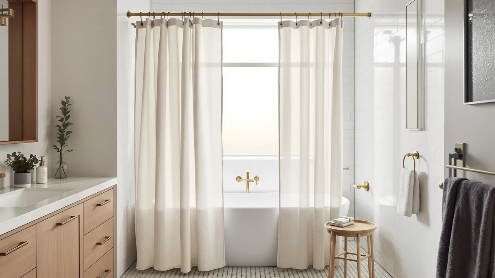

Best Shower Curtains for Health (2026)
Prices and picks verified as of August 2026. Independent, reader-supported reviews.


Quick Answer
The Amazon Basics Bathroom Shower Curtain is the best pick for most bathrooms because its PEVA and polyester build sheds water instead of trapping it, and its 4.6-star rating across 45,448 reviews is the deepest track record we compared. It also costs less than almost every other curtain here, cheap enough to replace on a regular schedule.
Our pick: Amazon Basics Bathroom Shower Curtain, $9.38 Check Price on Amazon
Bottom line: our top pick is the Amazon Basics Bathroom Shower Curtain at $9.38. The best budget option is the Mrs Awesome Extra Long Shower Curtain Liner with Magnets at $7.99.
Things to Know Before You Buy
- PVC vinyl curtains can carry a chemical smell right out of the packaging, from compounds called phthalates. PEVA and polyester curtains, like most picks in this best shower curtains for health guide, skip that plastic coating entirely.
- A curtain that clings to your skin during a shower is trapping moisture against itself, the same condition that lets mildew take hold. A weighted or magnetic hem keeps the fabric pulled taut and away from your body.
- Machine-washable liners let you clean out mildew spores before they spread, something a wipe-down never fully removes. Check the care label, since not every PEVA or vinyl liner tolerates a washing machine.
- Rustproof metal grommets hold up through hundreds of wash cycles in a bathroom already prone to humidity buildup, and they are worth the small price bump over stamped plastic ones.
- Extra-long and extra-wide sizes exist for walk-in showers and clawfoot tubs. A curtain that runs short lets splashed water reach the floor, where standing moisture invites mold no matter which curtain you chose.
The best shower curtains for health start with the material, not the price tag. A vinyl curtain that traps moisture in its folds breeds mold within days, while a PEVA or woven fabric curtain sheds water fast enough to stay mostly dry between showers. We compared seven curtains on that basis: fabric type, hem weight, and how quickly each material dries once you step out.
Our top pick is the Amazon Basics Bathroom Shower Curtain. At $9.38 it undercuts nearly every curtain in this guide, and its polyester and PEVA blend backs up a 4.6-star rating across 45,448 reviews, the largest review base of any product we compared. For a health-focused bathroom, that combination of a moisture-shedding material and a price low enough to replace every season matters more than a fancier finish.
If you want a dedicated liner instead of an all-in-one curtain, the Barossa Design Shower Curtain Liner pairs a PEVA build with a weighted hem, and buyers say it skips the chemical smell that cheaper vinyl liners carry out of the packaging. Buyers who want to avoid plastic sheeting against their skin should look at the N&Y HOME Fabric Shower Curtain, a woven polyester option built without the smooth PEVA coating some people react to. These two picks and five more are broken down below, with the honest tradeoffs each one comes with.
Why You Should Trust Us
We are a research-based review site, not a testing lab, and we do not pretend otherwise. To build this guide to the best shower curtains for health, we compared specs, materials, and prices across the sizes and price points shoppers actually search for, then cross-referenced every pick against its public Amazon rating and review count. Ilane Tall, who covers home and bath products for Best Shower Curtains, verified that each material claim here, PEVA, polyester, or fabric, matches what the manufacturer specs state.
Every number in this guide, from the 45,448 reviews behind the Amazon Basics pick to the 72x84 size on the Mrs Awesome curtain, traces back to a public listing you can check yourself. We earn a commission if you buy through our links, but that has no bearing on which curtain we name our pick.
How We Picked
We started with the shower curtains and liners that turn up most often in searches for a healthier bathroom setup, then narrowed the list using three filters. First, material: we prioritized PEVA and woven polyester over PVC vinyl, since PVC is the material most associated with off-gassing and a lingering chemical smell. Second, moisture management: curtains with a weighted or magnetic hem scored higher, because a hem that clings to the tub wall traps water against itself and speeds up mildew growth.
Third, track record: we required a substantial review count wherever the data existed, since a large, mostly positive review base is the closest thing to independent verification we have without owning every product ourselves. Seven curtains cleared all three filters and made the final cut for this best shower curtains for health roundup.
How We Compared
We built a side-by-side spec sheet for all seven curtains, lining up material, size, price, and rating so no single number could hide a weak pick. Materials mattered most: we separated true PEVA and polyester builds from vinyl-heavy listings that market themselves as PEVA without disclosing PVC content, since that distinction affects both odor and how long a curtain resists mildew.
We also weighed price against review volume rather than price alone, since a $7.99 curtain backed by 29,377 reviews tells you more about long-term durability than a similarly priced curtain with a handful of ratings. None of this produces a numeric score, and we do not assign one. It produces a direct recommendation for each curtain: who it fits and why.
Our Picks

Amazon Basics Bathroom Shower Curtain
What we like
- PEVA and polyester blend avoids the vinyl smell that comes with PVC-heavy curtains
- 4.6-star rating across 45,448 reviews, the largest and most consistent track record here
- At $9.38, one of the least expensive picks in this guide, cheap enough to replace every season
Flaws but not dealbreakers
- Standard 72x72 size only, no extra-long option for taller showers
- Reviewers note the PEVA can carry a faint plastic smell for the first few days before it airs out
| Material | Polyester / PEVA |
| Size | 72x72 |
The Amazon Basics Bathroom Shower Curtain earns the top recommendation in this guide because it solves the health problem most curtains create in the first place. Its polyester and PEVA construction sheds water instead of holding it against the fabric, so the curtain dries between showers rather than staying damp long enough for mold to take hold. That matters more for indoor air quality than any specific certification, since a curtain that stays wet is the single biggest driver of bathroom mildew growth, regardless of brand.
At $9.38, it also costs little enough to replace on a regular schedule, which is itself a health strategy: even a mildew-resistant curtain accumulates soap residue and biofilm over months of daily use, and replacing it periodically resets that buildup. The 45,448 reviews behind its 4.6-star rating make it the most reviewed product in this comparison, a track record that lowers the odds of a bad batch. Reviewers do note a faint plastic smell during the first few days, common to PEVA, though it airs out well before that outweighs the price and durability this curtain delivers.

Barossa Design Shower Curtain Liner
What we like
- Weighted hem keeps the liner pulled away from your body during a shower, cutting down the moisture trap that leads to mildew
- 91,634 reviews at 4.5 stars, the largest review count of any product in this guide
- PEVA build skips the PVC coating that gives cheaper vinyl liners their chemical smell
Flaws but not dealbreakers
- Functions as a liner rather than a decorative curtain, so most buyers still need an outer curtain over it
- Reviewers occasionally mention the grommets loosening after repeated machine washing
| Material | Polyester / PEVA |
| Size | 72x72 |
The Barossa Design Shower Curtain Liner is built specifically to solve the clinging problem that turns an ordinary curtain into a mildew magnet. Its weighted hem holds the bottom edge against the tub instead of letting it billow inward and stick to wet skin, and its PEVA construction dries faster than the vinyl liners that dominate the budget end of this category. For a health-focused bathroom, that combination of weight and material does more than any marketed anti-mildew coating.
Buyers say the liner holds its shape through repeated machine washing, and a liner you can actually clean stays healthier over the long run than one you wipe down and hope for the best. At $9.99, it costs about the same as a basic curtain, and its 91,634 reviews and 4.5-star rating give it the deepest track record in this guide. Some reviewers mention the grommets loosening after many wash cycles, a reasonable tradeoff for a liner most people replace annually regardless of brand.

AmazerBath Boho Shower Curtain Modern
What we like
- Polyester and PEVA build avoids the vinyl smell common in patterned budget curtains
- Boho print gives a decorative option without resorting to a printed PVC vinyl curtain
- 4.6-star rating shows the pattern holds up as well as the plainer curtains in this guide
Flaws but not dealbreakers
- At $19.99, more than double the price of the cheapest picks here
- Review count of 1,079 is thinner than the other products in this comparison
| Material | Polyester / PEVA |
| Size | 72x72 |
Most patterned shower curtains lean on PVC vinyl to keep printing costs down, which is exactly the material health-conscious shoppers are trying to avoid. The AmazerBath Boho Shower Curtain Modern proves you do not have to choose between a decorative print and a healthier material: its polyester and PEVA construction carries the same moisture-shedding properties as the plainer curtains in this guide, dyed into a boho pattern instead of left plain white.
At $19.99, it costs more than twice the Amazon Basics pick, and its 1,079 reviews are a thinner sample than the tens of thousands behind some competitors here. Still, its 4.6-star average suggests the pattern and material hold up as well as expected, and people who've bought it say the fabric feels heavier than typical printed vinyl curtains. If a plain white liner is not what you want hanging in your bathroom, this is the pick that gets you a print without going back to PVC.

Dynamene Sage Green Shower Curtain
What we like
- Sage green solid color hides soap scum and hard water spots better than white curtains
- Polyester and PEVA blend keeps the moisture-shedding properties this guide prioritizes
- 22,421 reviews at 4.6 stars, a substantial track record for a mid-priced curtain
Flaws but not dealbreakers
- At $15.99, priced above the cheaper picks without adding a weighted hem
- Reviewers note the color can look slightly different in person than in photos
| Material | Polyester / PEVA |
| Size | 72x72 |
White curtains show every water spot and soap streak, which pushes some owners toward bleach-heavy cleaning that is not great for indoor air quality either. The Dynamene Sage Green Shower Curtain sidesteps that problem with a muted solid color that hides residue between cleanings, while keeping the same polyester and PEVA build that dries fast and resists the vinyl smell of cheaper alternatives.
At $15.99 it sits in the middle of this guide's price range, and its 22,421 reviews and 4.6-star rating put it well ahead of the newer, less-reviewed options here. Some buyers say the color reads slightly more muted in a bathroom than in product photos, worth knowing before you buy if you are matching a specific palette. For a curtain that combines a proven track record with a color that hides the grime a health-focused bathroom accumulates between cleanings, this is a solid middle-price pick.

N&Y HOME Fabric Shower Curtain
What we like
- Woven polyester fabric feels different from the smooth PEVA sheet most budget curtains use
- 68,277 reviews at 4.6 stars, one of the strongest track records in this guide
- At $8.96, nearly as cheap as the least expensive pick despite the fabric upgrade
Flaws but not dealbreakers
- Fabric weave is less water-repellent than PEVA, so a liner behind it is worth adding in a heavily used shower stall
- Only comes in a standard 72x72 size
| Material | Polyester / PEVA |
| Size | 72x72 |
Most of the curtains in this guide are PEVA, a smooth plastic sheet that some people would rather not have against their skin at all, even if it beats PVC vinyl on smell. The N&Y HOME Fabric Shower Curtain is woven polyester instead, giving it a textile feel closer to a bath towel than a plastic liner, while still carrying the water resistance that keeps a bathroom from staying damp.
At $8.96 it undercuts nearly every other pick here, and its 68,277 reviews back a 4.6-star rating that holds up against curtains costing twice as much. Because the weave is not as tightly sealed as PEVA, several reviews mention it benefits from a liner in a shower stall that gets heavy daily use, though as a standalone curtain in a tub with good drainage it performs fine on its own. For anyone who wants fabric over plastic without paying a premium, this is the pick.

Mrs Awesome Extra Long Shower
What we like
- 72x84 length covers taller showers that a standard curtain leaves short, cutting down on floor splashing
- At $7.99, the least expensive product in this entire comparison
- 29,377 reviews at 4.5 stars, a solid track record for a budget extra-long curtain
Flaws but not dealbreakers
- The extra length can pool at the bottom of a standard-height tub if not trimmed or hemmed
- Polyester and PEVA build shares the same faint initial plastic smell as other budget picks
| Material | Polyester / PEVA |
| Size | 72x84 |
A curtain that runs short leaves a gap at the bottom where splashed water reaches the floor, and standing water on a bathroom floor is its own mold risk regardless of what curtain you bought. The Mrs Awesome Extra Long Shower curtain solves that at the source with a 72x84 size, six inches longer than the standard curtains in this guide, built to fully cover taller showers and ceiling-mounted rods.
At $7.99 it is also the cheapest product in this comparison, and its 29,377 reviews at 4.5 stars show that low price has not come at the cost of a thin track record. The extra length is a genuine advantage for walk-in showers, though it can pool slightly at the bottom of a standard-height tub if you do not trim or hem it first. For anyone whose current curtain leaves a gap near the floor, the length here solves a real moisture problem the shorter picks in this guide cannot.

SKL Home The World Map
What we like
- Distinctive world map print stands out from the plain and pastel curtains elsewhere in this guide
- Polyester and PEVA build keeps the same moisture-shedding properties as the rest of this comparison
- 4.6-star rating shows the novelty print has not hurt durability
Flaws but not dealbreakers
- At $22.99, the most expensive pick in this guide by a wide margin
- 70x72 size runs slightly narrower than the 72x72 standard, worth checking against your rod width
| Material | Polyester / PEVA |
| Size | 70x72 |
Not every buyer in this category wants a plain, neutral curtain, and the SKL Home The World Map is here for that reason. Its printed design gives a bathroom a distinct look while still using the same polyester and PEVA construction found in the more understated picks in this guide, so the decorative upgrade does not come at the cost of the material properties that keep a curtain healthy to live with.
At $22.99 it is the priciest product in this comparison, nearly two and a half times the cost of the Amazon Basics pick, and its 2,909 reviews sit on the lower end of the range here, though its 4.6-star average matches the top performers. The 70x72 size runs two inches narrower than the standard width used elsewhere in this guide, so measure your rod before ordering. For a bathroom where the curtain itself is meant to be a design statement, it earns its place despite the higher price.
Quick Comparison
| Product | Material | Price | Rating | Best for | Get it |
|---|---|---|---|---|---|
| Amazon Basics Bathroom Shower Curtain | Polyester / PEVA | $9.38 | 4.6 | Best overall for health-focused shoppers | View on Amazon → |
| Barossa Design Shower Curtain Liner | Polyester / PEVA | $9.99 | 4.5 | Best liner for reducing clinging and moisture buildup | View on Amazon → |
| AmazerBath Boho Shower Curtain Modern | Polyester / PEVA | $19.99 | 4.6 | Best patterned pick that skips PVC vinyl | View on Amazon → |
| Dynamene Sage Green Shower Curtain | Polyester / PEVA | $15.99 | 4.6 | Best solid color for hiding soap scum between cleanings | View on Amazon → |
| N&Y HOME Fabric Shower Curtain | Polyester / PEVA | $8.96 | 4.6 | Best woven fabric alternative to PEVA and vinyl | View on Amazon → |
| Mrs Awesome Extra Long Shower | Polyester / PEVA | $7.99 | 4.5 | Best extra-long size for taller showers | View on Amazon → |
| SKL Home The World Map | Polyester / PEVA | $22.99 | 4.6 | Best decorative print for a design-forward bathroom | View on Amazon → |
Are PEVA shower curtains actually healthier than vinyl?
Yes, in most comparisons.
How often should you replace a shower curtain for health reasons?
Most manufacturers and reviewers point to somewhere between six months and a year, depending on humidity and cleaning frequency.
The Competition
We passed on plain PVC vinyl curtains that do not disclose PEVA or phthalate-free content anywhere in the listing. Vinyl is the cheapest material to produce, but it is also the material most linked to the chemical smell and off-gassing that a health-focused guide is specifically trying to avoid. If cost is your main concern rather than material, our PEVA shower curtain guide covers more budget options that still skip PVC.
We also skipped curtains marketed heavily around anti-mildew coatings without any supporting review data, since a sprayed-on coating that has not held up to real household use is not a claim we can verify from a listing alone. For readers dealing with an existing mildew problem, our guide to shower curtains for mold and mildew covers that use case directly, and our mildew prevention guide covers the cleaning routine that matters more than the curtain itself.
Finally, we left cotton and linen curtains out of this particular guide. Natural fibers have their own health tradeoffs, since they absorb rather than repel water and need a separate liner to stay usable, which changes the comparison enough that they deserve their own roundup. Our fabric shower curtain guide covers those material tradeoffs if a woven natural fiber interests you more than PEVA or polyester.
For most households, the Amazon Basics Bathroom Shower Curtain remains the best shower curtains for health pick in this comparison, pairing a moisture-shedding PEVA and polyester build with the deepest review history and the lowest price of the group.
Frequently Asked Questions
Are PEVA shower curtains actually healthier than vinyl?
Yes, in most comparisons. PEVA is a type of plastic that skips the phthalates and PVC compounds responsible for the strong chemical smell fresh vinyl curtains carry out of the packaging. It still needs to dry between showers to avoid mildew, but buyers consistently report less odor and less residue buildup than with PVC vinyl liners.
How often should you replace a shower curtain for health reasons?
Most manufacturers and reviewers point to somewhere between six months and a year, depending on humidity and cleaning frequency. Even a mildew-resistant curtain accumulates soap film and biofilm that a wipe-down does not fully remove, which is why budget picks like the Amazon Basics and Mrs Awesome curtains in this guide make sense to replace on a schedule rather than treat as a one-time purchase.
What is the healthiest material for a shower curtain?
Among the best shower curtains for health, PEVA and woven polyester rate ahead of PVC vinyl because they avoid phthalate off-gassing and typically dry faster, which limits mold growth. Cotton and linen are breathable but absorb water rather than repelling it, so they need a separate liner to do the same job.